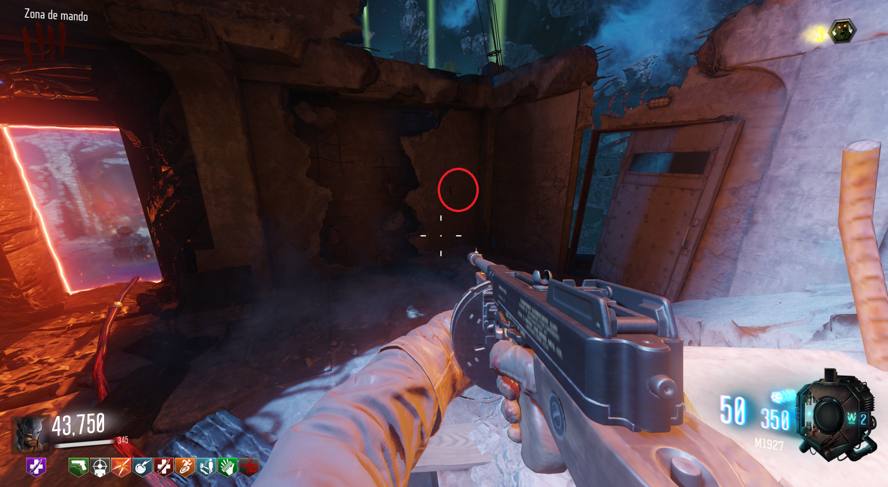
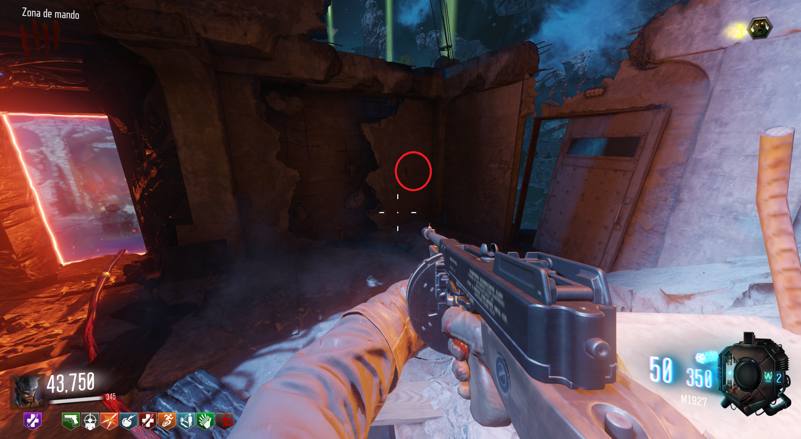

Canción 2 (Revelations)

Tendremos que accionar los 4 botones RÁPIDO en Nacht der Untoten en el siguiente orden:
A la derecha del portal a Der Eisendrachen.

En la planta de arriba, a la derecha del acceso al PaP.
En las escaleras a la izquierda de la mesa de construcción.
En la sala donde estan los portales de Verrückt y el Spawn, al la izquierda de una estantería.
Dispararemos a la radio bajo las escaleras y una canción aleatoria de la historia de COD Zombies comenzará a sonar.
A la derecha del portal a Der Eisendrachen.

En la planta de arriba, a la derecha del acceso al PaP.
En las escaleras a la izquierda de la mesa de construcción.
En la sala donde estan los portales de Verrückt y el Spawn, al la izquierda de una estantería.
Dispararemos a la radio bajo las escaleras y una canción aleatoria de la historia de COD Zombies comenzará a sonar.